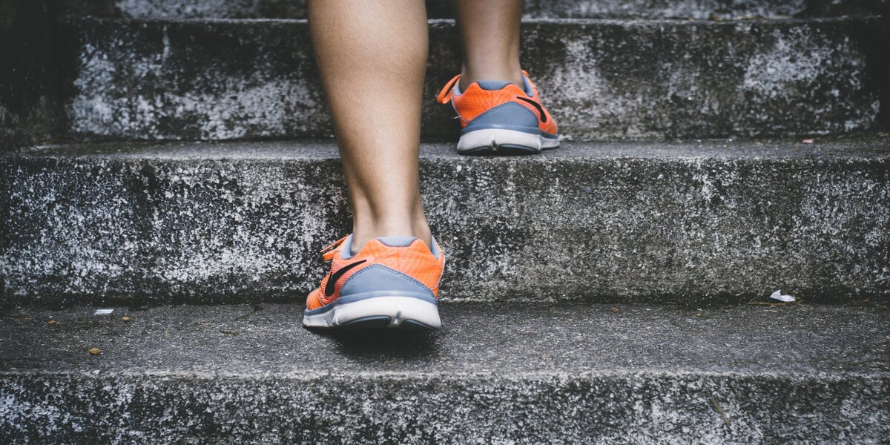
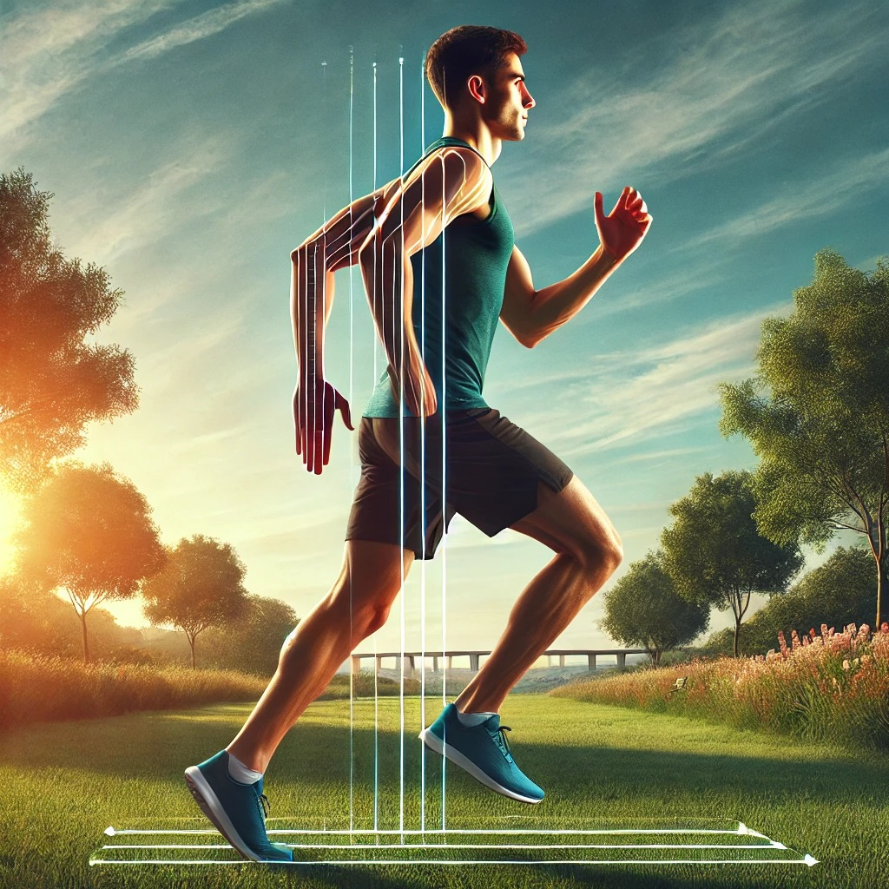
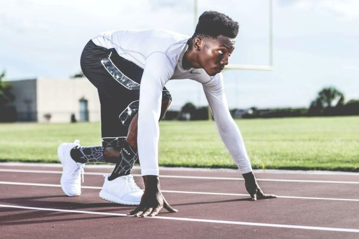
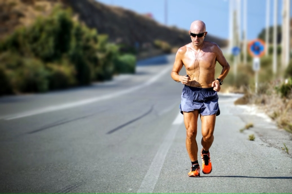
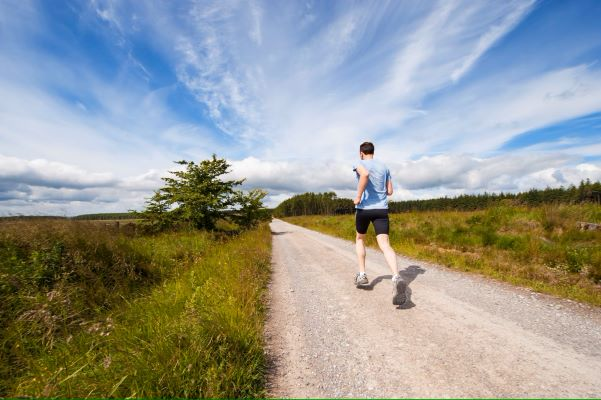
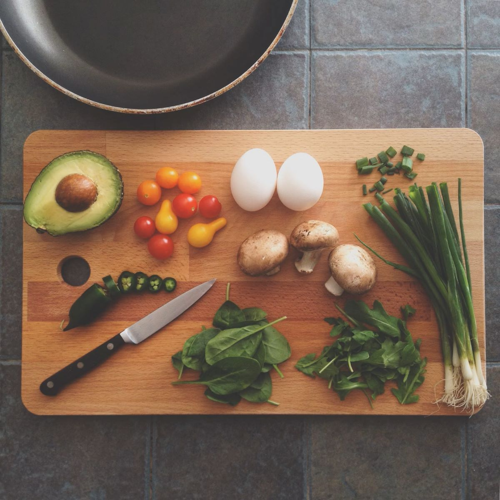

Acest ghid de alergare acoperă tehnici fundamentale, tipuri de antrenamente și sfaturi esențiale de nutriție
și recuperare.

Acest ghid de alergare este conceput pentru a te ajuta să începi și să îți îmbunătățești tehnicile de
alergare, indiferent dacă ești începător sau ai deja experiență. Alergarea este una dintre cele mai simple
și eficiente forme de exercițiu, oferind beneficii semnificative pentru sănătate, cum ar fi îmbunătățirea
condiției fizice, reducerea stresului și prevenirea bolilor cronice.
Alergarea regulată poate ajuta la întărirea mușchilor, îmbunătățirea sănătății cardiovasculare și creșterea
capacității pulmonare. De asemenea, aceasta poate contribui la menținerea unei greutăți corporale sănătoase
și la reducerea riscului de boli cum ar fi diabetul de tip 2, bolile de inimă și anumite tipuri de cancer.
În plus, alergarea eliberează endorfine, cunoscute sub numele de „hormonii fericirii”, care pot ajuta la
îmbunătățirea stării de spirit și la combaterea depresiei.
Este important să începi încet și să îți asculți corpul. Mulți începători fac greșeala de a alerga prea
mult, prea repede, ceea ce poate duce la accidentări. Începe cu sesiuni de alergare scurte, alternate cu
mers, și crește treptat durata și intensitatea antrenamentelor. Este esențial să ai o pereche de pantofi de
alergare de calitate, care să ofere suport adecvat și să prevină accidentările.
Tehnici de Alergare
Postura Corectă
O postură corectă asigură o alergare eficientă și reduce riscul de accidentare.

Postura Corectă: O postură corectă asigură o alergare eficientă și reduce riscul de accidentare.
Menținerea unei posturi drepte, cu capul ridicat și privirea înainte, ajută la echilibrarea corpului și
la reducerea stresului asupra coloanei vertebrale. Umerii ar trebui să fie relaxați și să cadă natural,
nu încordați sau ridicați. Brațele ar trebui să se miște ritmic, la un unghi de aproximativ 90 de grade,
fără a trece linia mediană a corpului.
Tehnica de Aterizare: Modul în care piciorul tău atinge solul poate avea un impact semnificativ
asupra
eficienței și confortului alergării tale. În general, este recomandat să aterizezi pe partea mediană a
piciorului (midfoot) sau pe partea din față (forefoot), mai degrabă decât pe călcâi (heel). Aterizarea
pe călcâi poate cauza un impact mai mare și poate duce la accidentări. Încearcă să ai pași ușori și
rapizi, cu o cadentă (numărul de pași pe minut) mai mare, pentru a reduce forțele de impact.
Lungimea Pasului: Lungimea pasului tău ar trebui să fie naturală și să nu fie exagerată. Pașii
prea
lungi pot duce la aterizarea pe călcâi și la un risc mai mare de accidentare. Încearcă să îți păstrezi
picioarele sub corp în timpul aterizării și să eviți să întinzi piciorul prea departe înainte.
Tipuri de Antrenament
Antrenamente de Viteză
Acestea dezvoltă viteza și potențialul anaerob. Exemple: sprinturi, intervale rapide.

Antrenamente de Anduranță
Acestea cresc capacitatea de rezistență a organismului prin alergări pe distanțe lungi la o intensitate
moderată.

Antrenamente de Recuperare
Antrenamentele de recuperare sunt alergări lente, folosite pentru refacerea după antrenamente
intense.

Atentie, aceste antrenamente de recuperare ar trebuii realizate la o viteza conversationala, unde poti
sa vorbesti cu lejeritate. Acest lucru este cunoscut ca si zona 2 de alergare.
Nutriție și Recuperare
O dietă echilibrată susține performanța și refacerea musculară.

Carbohidrații complecși, precum cei din cereale integrale, orez brun și legume, sunt principala sursă de
energie și ar trebui să constituie baza dietei unui alergător. Proteinele sunt cruciale pentru repararea și
creșterea musculară, surse bune fiind carnea slabă, peștele, ouăle și leguminoasele. Grăsimile sănătoase din
avocado, nuci și uleiuri vegetale ajută la funcționarea optimă a organismului.